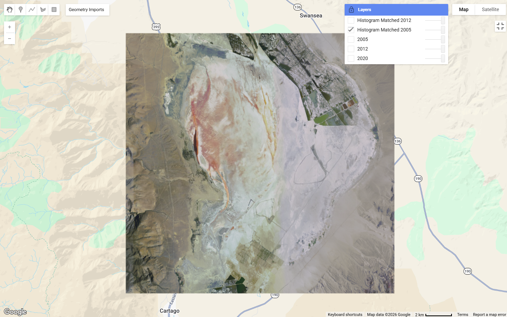
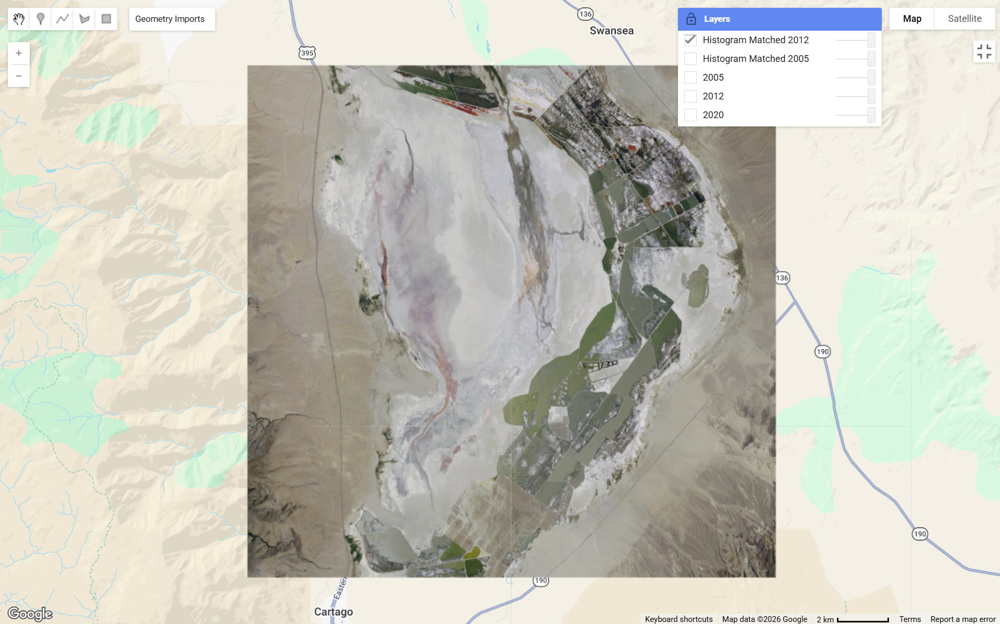
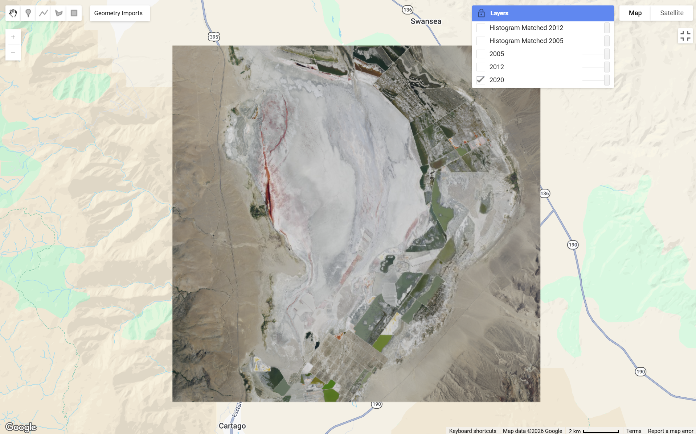

Owens Lake in California shows significant environmental change between 2005, 2012, and 2020. In the 2005 image, much of the lakebed appears dry with large exposed salt flats and limited water coverage. By 2012, there are noticeable changes in surface color and texture, including increased reddish and brown tones, which indicate shifts in mineral deposits and possible dust control efforts. By 2020, more structured patterns appear across the lakebed, including managed water areas and vegetation patches, especially on the eastern side. These changes reflect human intervention to reduce dust pollution, as well as ongoing environmental management efforts that have altered the landscape over time.